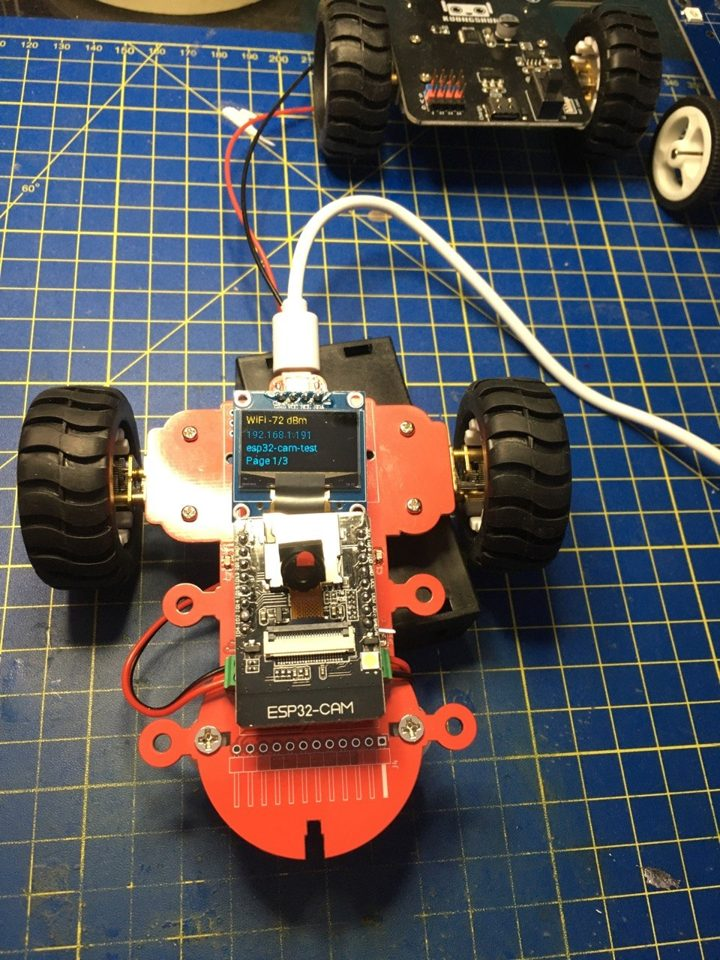

ESP32-CAM plugin board — ESPHome validation
| Type | Bring-up and test firmware: checks every part of the board from a web page |
|---|---|
| Hardware | AI-Thinker ESP32-CAM (OV2640, PSRAM) on a custom plugin board |
| On the board | 2 × L9110 motor drivers, TX1812 RGB LED (D1), 0.96″ SSD1306 OLED, USB-C power |
| Firmware | ESPHome 2025.2.2, Arduino framework, on Linux |
| Web page | Port 80: controls, tests and logs |
| Video | MJPEG on port 8080 |
| Fallback AP | esp32-cam-test fallback |
| Configuration | esp32_cam_test.yaml |
This is a test bench, not a robot firmware. Its only job is to prove, one part at a time, that a freshly assembled plugin board works: screen, LED, both motors, camera and power supply. Everything is driven from buttons on a web page.
Every pin in the configuration comes from the net labels of the schematic. The first version guessed them, before the labels existed — and the OLED and the LED stayed dark. Read the schematic first.
Overview
The firmware is a single ESPHome file. Once flashed, the board joins the Wi-Fi network, shows its address on the OLED, and serves a page with one row per part: switches, sliders, test buttons, and the live log on the right.

Each test answers a single question:
- I²C bus and OLED — is the screen found, and does it draw correctly to all four edges?
- LED D1 — does the RGB LED receive data, in the right colour order?
- Motors — does each L9110 turn its motor both ways?
- Power — does the 5 V supply hold with both motors at full power? Uptime is the referee: if it drops back to 0, the board reset.
- Camera — the heaviest load, and the final “everything at once” check.
Pinout, from the schematic
| Part | Signal | GPIO | Note |
|---|---|---|---|
| OLED (BB1) | SDA | GPIO3 | U0R, net ftdi_tx, pull-up R3 to 3V3 |
| SCL | GPIO1 | U0T, net ftdi_rx, pull-up R4 to 3V3 | |
| LED D1 | DIN | GPIO4 | Shared with the module's white flash LED |
| Motor A (U1 → J1) | IA | GPIO13 | U1 pin 6 |
| IB | GPIO2 | U1 pin 7, strapping pin | |
| Motor B (U3 → J3) | IA | GPIO15 | U3 pin 6, strapping pin |
| IB | GPIO14 | U3 pin 7 | |
| Camera | GPIO0, 5, 18–27, 32–39 | Fixed AI-Thinker pinout | |
Two consequences follow directly from this table, and they shape everything else:
- The OLED sits on the serial port. GPIO1 and GPIO3 are the UART the USB adapter uses. Serial logging is therefore switched off (
baud_rate: 0); the logs appear on the web page instead. And a USB upload with the module on the board risks failing: flash the first time with the module on its MB adapter, then update over Wi-Fi. - D1 and the flash LED share GPIO4. The data pulses meant for D1 make the white flash LED flicker faintly. That is expected and harmless.
Installing ESPHome on Linux
Install ESPHome in its own virtual environment, never with pip install --user:
python3 -m venv ~/esphome-venv
source ~/esphome-venv/bin/activate
pip install esphome==2025.2.2
esphome versionWith a --user install, pip shares packages with everything else on the machine. To fit ESPHome it silently downgraded cryptography, starlette and uvicorn, and broke mcp, fastapi and others. A virtual environment keeps that damage inside one folder.
Pin the version. This configuration is written for 2025.2.2, the release pip picks on Python 3.10. ESPHome 2026 changed several options it uses (see Traps).
To flash over USB without sudo, add yourself to the dialout group once, then log out and back in:
sudo usermod -aG dialout $USERConfigure & flash
- Download esp32_cam_test.yaml into a folder.
- Next to it, create
secrets.yamlwith a 2.4 GHz network — the ESP32 cannot join 5 GHz:wifi_ssid: "YourWiFi" wifi_password: "YourPassword" - Check, then compile. The first build downloads the toolchain and takes 5–15 minutes:
esphome config esp32_cam_test.yaml esphome compile esp32_cam_test.yaml - First flash, over USB. Take the ESP32-CAM off the plugin board, put it on its MB adapter, then:
With a bare USB-serial adapter instead of the MB board, tie IO0 to GND while powering up, and remove it afterwards.esphome run esp32_cam_test.yaml --device /dev/ttyUSB0 - Put the module back on the board and power it. After about 20 seconds the OLED shows the IP address.
- All later updates go over Wi-Fi, to the address the OLED shows:
esphome run esp32_cam_test.yaml --device 192.168.1.42
If the board does not join the network, look for an access point called esp32-cam-test fallback. Its presence means the board runs but the Wi-Fi password is wrong, or the network is 5 GHz only.
The test sequence
Open http://<IP> and work down the table. The log column on the right shows what the board is doing.
| # | Test | Action | Pass if |
|---|---|---|---|
| 1 | I²C / OLED | Read the boot log; press Run OLED test | Found i2c device at address 0x3C, and the frame touches all four edges |
| 2 | LED D1 | Watch at power-up; press Run LED test | Three white blinks, then red → green → blue → white → off |
| 3 | Motor A | Press Run motor test | J1 turns forward 2 s, then reverse 2 s |
| 4 | Motor B | Same button, continues by itself | Same on J3 |
| 5 | Power stress | Same button: both motors at 100 % for 3 s | Uptime keeps counting, Wi-Fi does not drop |
| 6 | Camera | Open http://<IP>:8080 | A live image |
| 7 | Battery only | Unplug USB, repeat 5 and 6 | Still no reset |
If a motor's “forward” is backwards for your build, swap its two wires at the screw terminal, or swap its IA/IB pins at the top of the file.
The OLED: status pages
Three pages rotate every 4 seconds:
- Network — Wi-Fi signal and IP address. This is the page that tells you where to send updates.
- Outputs — each motor (
off,+50%,-50%) and D1 brightness. - System — uptime as h:m:s, free heap and free PSRAM.
Run OLED test shows a pattern for 4 seconds: a frame around the edge, a solid block, fine lines and “OLED OK”. It makes dead pixels, a cut-off image or a shift obvious. OLED next page skips ahead.
The screen type is set at the top of the file:
oled_model: "SSD1306 128x64" # 0.96"
# "SSD1306 128x32" # 0.91"
# "SH1106 128x64" # 1.3"
oled_address: "0x3C" # some modules use 0x3DLED D1: colours
ESPHome's web page gives a light only an on/off switch and a brightness slider — no colour picker. The configuration therefore adds an LED D1 color drop-down: Off, Red, Green, Blue, White, Yellow, Cyan, Magenta, Orange, Purple. The LED D1 slider still sets the brightness.
For an exact colour, send it from a terminal (values 0–255):
curl -X POST "http://192.168.1.42/light/led_d1/turn_on?r=255&g=0&b=128&brightness=150"
curl -X POST "http://192.168.1.42/light/led_d1/turn_off"The address led_d1 comes from the entity name LED D1. Brackets or a slash in a name make the address ugly — another reason to keep names short.
If the colours are wrong or D1 stays dark, two settings at the top of the file help: led_chipset (try SK6812) and led_rgb_order (try RGB). D1 runs on 5 V while the ESP32 drives 3.3 V: at 5 V the data input wants about 3.5 V, so the margin is thin. It worked here; a 74AHCT1G125 level shifter is the proper fix if it does not for you.
The camera: stream and live settings
The video is not on the port-80 page — that page only lists entities. It is at http://<IP>:8080, one viewer at a time. With nobody watching, the log shows Got Image every 10 seconds (idle_framerate: 0.1 fps): that line alone proves the camera works.
Controls on the web page change the picture live:
| Control | Range |
|---|---|
| Cam vertical flip / horizontal mirror | on / off |
| Cam brightness, contrast, saturation, exposure level | −2 … +2 |
| Cam JPEG quality | 10 (best) … 63 (smallest, fastest) |
| Cam white balance | Auto, Sunny, Cloudy, Office, Home |
| Cam effect | None, Negative, Grayscale, Red/Green/Blue tint, Sepia |
They call the camera driver directly (esp_camera_sensor_get()). Live changes are lost on reboot: once a setting looks right, copy its value into the esp32_camera: block, where each option is listed with its range.
ESPHome flips and mirrors the image by default. On this board that gave an upside-down picture, so both are off at start-up — a 180° turn. For a smoother stream, lower resolution (try 320x240) or raise jpeg_quality (try 20). Measured at 640×480: 5–8 frames per second.
Traps met during bring-up
Each of these cost a round trip. Most are ESPHome details that the error message does not explain.
Wrong pins: a dark screen, a dark LED, a one-way motor
The first configuration guessed the pins. Result: nothing on the OLED, nothing on D1, motor A turning one way only (one of its inputs was wired to nothing), motor B reversed. All four were fixed by reading the net labels. Wherever a pin is uncertain, do not guess: ask the schematic.
A substitution inside a one-line mapping
- fan.turn_on: { id: motor_a, speed: ${test_speed} } # YAML errorThe { of ${ opens a second mapping in the middle of the first: expected ',' or '}', but got '{'. Write that step on several lines.
ignore_strapping_warning on an ordinary pin
The option is an error on a pin that is not a strapping pin (GPIO14 is not a strapping pin). Put it only on GPIO0, 2, 5, 12 and 15.
rmt_channel: required, then forbidden
On ESPHome 2025.2 with the Arduino framework, esp32_rmt_led_strip requires rmt_channel. ESPHome 2026 rejects it as an invalid option. Same for the camera: 2025.2 wants i2c_pins:, 2026 refuses it next to an i2c: block and wants i2c_id:. Hence the pinned version.
The drop-down that stopped the board from starting
After the LED D1 color drop-down was added, the board no longer started. A template select publishes its initial value during setup, which fires its on_value — here, an order to switch D1 off, very probably before the LED driver was ready. The fix is a boot_done flag, set at the end of on_boot, that the drop-down checks before doing anything. The board started again.
When a board crash-loops, ESPHome falls back to safe mode after about ten failed boots: a minimal firmware that still accepts an OTA upload. So a broken build can often be replaced over Wi-Fi without touching USB.
The address changes
The router handed out a different address several times (.33, .133, then .42). No route to host during an upload usually means exactly that, or that the board is unpowered. The first OLED page shows the current address.
The video is on another port
The port-80 page never shows video. Looking for it there, while the log shows Got Image, makes the camera look broken when it is not.
Windows
Under MSYS2/MINGW64, ESPHome 2026 cannot build: the ESP-IDF tools refuse that environment (MSys/Mingw is no longer supported), yet ESPHome still prints Successfully compiled and the upload then finds no firmware. This validation was done on Linux.
Troubleshooting
The board does not start at all
Read the chip's own boot messages, which print even with logging off: module on the MB adapter, IO0 free, then python3 -m serial.tools.miniterm /dev/ttyUSB0 115200 and press RST. A repeating Brownout detector was triggered is a power problem; a repeating Guru Meditation is the firmware. Also check that nothing holds GPIO12 high at power-up.
The OLED stays blank
No device in the I²C scan: SDA and SCL swapped, pull-ups missing, or the OLED unpowered. A device at 0x3D: change oled_address. Doubled lines: wrong oled_model.
Uptime drops back to 0 during the motor test
The 5 V rail sags under both motors. Add 220–470 µF plus 10 µF ceramic on +5 V near the ESP32-CAM, or give the motors their own supply through J5.
No video on port 8080
Only one viewer at a time: close any other tab with the stream. If the picture is dark, check the lens cap and that the camera ribbon is fully seated with its latch closed. If the board resets as the stream opens, comment out the esp32_camera: block to tell a camera fault from a power fault.
Related articles: ESP32-CAM Robot (m2) · ESP32-CAM Robot m1 · VideoCar · ESP32-CAM Robot workshop